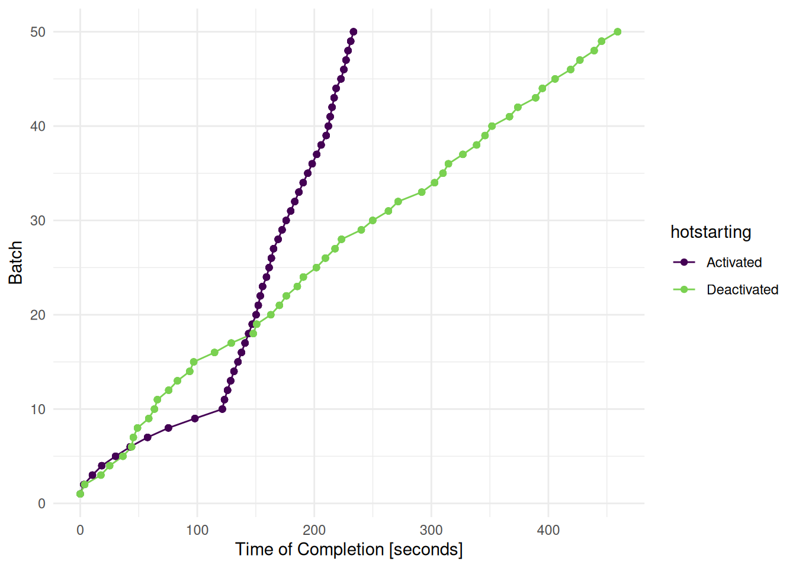

library(mlr3verse)
learner = lrn("classif.ranger",
mtry.ratio = to_tune(0, 1),
replace = to_tune(),
sample.fraction = to_tune(1e-1, 1),
num.trees = to_tune(1, 2000)
)Scope
Hotstarting a learner resumes the training from an already fitted model. An example would be to train an already fit XGBoost model for an additional 500 boosting iterations. In mlr3, we call this process Hotstarting, where a learner has access to a cache of already trained models which is called a mlr3::HotstartStack We distinguish between forward and backward hotstarting. We start this post with backward hotstarting and then talk about the less efficient forward hotstarting.
Backward Hotstarting
In this example, we optimize the hyperparameters of a random forest and use hotstarting to reduce the runtime. Hotstarting a random forest backwards is very simple. The model remains unchanged and only a subset of the trees is used for prediction i.e. a new model is not fitted. For example, a random forest is trained with 1000 trees and a specific hyperparameter configuration. If another random forest with 500 trees but with the same hyperparameter configuration has to be trained, the model with 1000 trees is copied and only 500 trees are used for prediction.
We load the ranger learner and set the search space from the Bischl et al. (2021) article.
We activate hotstarting with the allow_hotstart option. When running a grid search with hotstarting, the grid is sorted by the hot start parameter. This means the models with 2000 trees are trained first. The models with less than 2000 trees hot start on the 2000 trees models which allows the training to be completed immediately.
instance = tune(
tuner = tnr("grid_search", resolution = 5, batch_size = 5),
task = tsk("spam"),
learner = learner,
resampling = rsmp("holdout"),
measure = msr("classif.ce"),
allow_hotstart = TRUE
)For comparison, we perform the same tuning without hotstarting.
instance_2 = tune(
tuner = tnr("grid_search", resolution = 5, batch_size = 5),
task = tsk("spam"),
learner = learner,
resampling = rsmp("holdout"),
measure = msr("classif.ce"),
allow_hotstart = FALSE
)We plot the time of completion of each batch (see Figure 1). Each batch includes 5 configurations. We can see that tuning with hotstarting is slower at first. As soon as all models are fitted with 2000 trees, the tuning runs much faster and overtakes the tuning without hotstarting.

Forward Hotstarting
Forward hotstarting is currently only supported by XGBoost. However, we have observed that hotstarting only provides a speed advantage for very large datasets and models with more than 5000 boosting rounds. The reason is that copying the models from the main process to the workers is a major bottleneck. The parallelization package future copies the models sequentially to the workers. Consequently, it takes a long time until the last worker can even start. Moreover, copying itself consumes a lot of time, and copying the model back from the worker blocks the main process again. During the development process, we overestimated the speed benefits of hotstarting and underestimated the overhead of parallelization. We can therefore only advise against using forward hotstarting during tuning. It is much more efficient to use the internal early-stopping mechanism of XGBoost. This eliminates the need to copy models to the worker. See the book section on internal tuning for an example of early stopping. We might improve the efficiency of the hotstarting mechanism in the future, if there are convincing use cases.
Manual Hotstarting
Nevertheless, forward hotstarting can be useful without parallelization. If you have an already trained model and want to add more boosting iteration to it. In this example, the learner_5000 is the already trained model. We create a new learner with the same hyperparameters but double the number of boosting iteration. To activate hotstarting, we create a HotstartStack and copy it to the $hotstart_stack slot of the new learner.
task = tsk("spam")
learner_5000 = lrn("classif.xgboost", nrounds = 5000, eta = 0.1)
learner_5000$train(task)
learner_10000 = lrn("classif.xgboost", nrounds = 10000, eta = 0.1)
learner_10000$hotstart_stack = HotstartStack$new(learner_5000)
learner_10000$train(task)Training the initial model took 59.885 seconds.
learner_5000$state$train_time[1] 59.885Adding 5000 boosting rounds took 46.837 seconds.
learner_10000$state$train_time - learner_5000$state$train_time[1] 46.837Training the model from the beginning would have taken about two minutes. This means, without parallelization, we get the expected speed advantage.
Conclusion
We have seen how mlr3 enables to reduce the training time, by building on a hotstart stack of already trained learners. One has to be careful, however, when using forward hotstarting during tuning because of the high parallelization overhead that arises from copying the models between the processes. If a model has an internal early stopping implementation, it should usually be relied upon instead of using the mlr3 hotstarting mechanism. However, manual forward hotstarting can be helpful in some situations when we do not want to train a large model from the beginning.
Session Information
sessioninfo::session_info(info = "packages")═ Session info ═══════════════════════════════════════════════════════════════════════════════════════════════════════
─ Packages ───────────────────────────────────────────────────────────────────────────────────────────────────────────
package * version date (UTC) lib source
backports 1.5.1 2026-04-03 [1] RSPM
base64url 1.4 2018-05-14 [1] RSPM
batchtools 0.9.18 2025-08-20 [1] RSPM
bbotk 1.13.1 2026-09-17 [1] RSPM
bit 4.6.0 2025-03-06 [1] RSPM
bit64 4.8.6 2026-09-01 [1] RSPM
brew 1.0-10 2023-12-16 [1] RSPM
callr 3.8.0 2026-06-05 [1] RSPM
checkmate 2.3.4 2026-02-03 [1] RSPM
class 7.3-24 2026-08-03 [2] CRAN (R 4.6.2)
classInt 0.4-11 2025-01-08 [1] RSPM
cli 3.6.6 2026-04-09 [1] RSPM
codetools 0.2-20 2024-03-31 [2] CRAN (R 4.6.2)
coro 1.1.0 2024-11-05 [1] RSPM
crayon 1.5.3 2024-06-20 [1] RSPM
data.table * 1.18.6.1 2026-08-24 [1] RSPM
DBI 1.3.0 2026-02-25 [1] RSPM
dictionar6 0.1.3 2026-02-23 [1] https://m~
digest 0.6.39 2025-11-19 [1] RSPM
distr6 1.8.4 2026-02-23 [1] https://m~
dplyr 1.2.1 2026-04-03 [1] RSPM
e1071 1.7-17 2025-12-18 [1] RSPM
evaluate 1.0.5 2025-08-27 [1] RSPM
farver 2.1.2 2024-05-13 [1] RSPM
fastmap 1.2.0 2024-05-15 [1] RSPM
future 1.82.0 2026-11-02 [1] RSPM
generics 0.1.4 2025-05-09 [1] RSPM
ggplot2 * 4.0.3 2026-04-22 [1] RSPM
globals 0.20.0 2026-10-11 [1] RSPM
glue 1.8.1 2026-04-17 [1] RSPM
gtable 0.3.6 2024-10-25 [1] RSPM
hms 1.1.4 2025-10-17 [1] RSPM
htmltools 0.5.9 2025-12-04 [1] RSPM
htmlwidgets 1.6.4 2023-12-06 [1] RSPM
jsonlite 2.0.0 2025-03-27 [1] RSPM
KernSmooth 2.23-27 2026-08-12 [2] CRAN (R 4.6.2)
knitr 1.52 2026-09-06 [1] RSPM
labeling 0.4.3 2023-08-29 [1] RSPM
lattice 0.23-1 2026-08-12 [2] CRAN (R 4.6.2)
lgr 0.5.2 2026-01-30 [1] RSPM
lifecycle 1.0.5 2026-01-08 [1] RSPM
listenv 1.1.0 2026-10-04 [1] RSPM
magrittr 2.0.5 2026-04-04 [1] RSPM
Matrix 1.7-6 2026-07-25 [2] CRAN (R 4.6.2)
matrixStats 1.5.0 2025-01-07 [1] RSPM
mgcv 1.9-4 2025-11-07 [2] CRAN (R 4.6.2)
mlr3 * 1.8.0 2026-08-21 [1] RSPM
mlr3batchmark 0.2.2 2025-09-04 [1] RSPM
mlr3benchmark 0.1.8 2026-08-21 [1] RSPM
mlr3cluster 0.7.0 2026-10-17 [1] RSPM
mlr3cmprsk 0.0.7 2026-10-18 [1] https://m~
mlr3data 0.9.0 2024-11-08 [1] RSPM
mlr3db 0.7.3 2026-11-03 [1] RSPM
mlr3extralearners 1.7.0 2026-09-15 [1] https://m~
mlr3fairness 0.4.0 2026-11-04 [1] Github (mlr-org/mlr3fairness@6946cbe)
mlr3fda 0.7.2 2026-08-21 [1] RSPM
mlr3filters 0.9.1 2026-04-23 [1] RSPM
mlr3fselect 1.7.0 2026-08-23 [1] RSPM
mlr3hyperband 1.1.1 2026-07-25 [1] RSPM
mlr3inferr 0.2.2 2026-08-21 [1] RSPM
mlr3learners 0.16.0 2026-09-08 [1] RSPM
mlr3mbo 1.2.1 2026-07-26 [1] RSPM
mlr3measures 1.3.0 2026-04-17 [1] RSPM
mlr3misc 0.23.0 2026-08-21 [1] RSPM
mlr3oml 0.12.0 2026-01-28 [1] RSPM
mlr3pipelines 0.12.0 2026-09-05 [1] RSPM
mlr3proba 0.8.10 2026-06-05 [1] https://m~
mlr3spatial 0.7.0 2026-07-14 [1] RSPM
mlr3spatiotempcv 2.3.5 2026-08-03 [1] RSPM
mlr3torch 0.4.0 2026-10-30 [1] RSPM
mlr3tuning 1.7.0 2026-09-02 [1] RSPM
mlr3tuningspaces 0.7.0 2026-07-25 [1] RSPM
mlr3verse * 0.4.0 2026-09-15 [1] RSPM
mlr3viz 0.11.2 2026-09-23 [1] RSPM
mlr3website * 0.0.0.9000 2026-11-04 [1] Github (mlr-org/mlr3website@3087c0c)
moocore 0.3.2 2026-07-12 [1] RSPM
nlme 3.1-171 2026-09-01 [2] CRAN (R 4.6.2)
ooplah 0.2.0 2022-03-25 [1] https://m~
otel 0.2.0 2025-08-29 [1] RSPM
palmerpenguins 0.1.1 2022-08-15 [1] RSPM
paradox 1.0.1 2024-07-09 [1] RSPM
parallelly 1.50.0 2026-10-31 [1] RSPM
param6 0.2.4 2026-02-23 [1] https://m~
pillar 1.11.1 2025-09-17 [1] RSPM
pkgconfig 2.0.3 2019-09-22 [1] RSPM
prettyunits 1.2.0 2023-09-24 [1] RSPM
processx 3.9.0 2026-04-22 [1] RSPM
progress 1.2.3 2023-12-06 [1] RSPM
proxy 0.4-29 2025-12-29 [1] RSPM
ps 1.9.3 2026-04-20 [1] RSPM
purrr 1.2.2 2026-04-10 [1] RSPM
R6 2.6.1 2025-02-15 [1] RSPM
rappdirs 0.3.4 2026-01-17 [1] RSPM
rbibutils 2.4.1 2026-01-21 [1] RSPM
RColorBrewer 1.1-3 2022-04-03 [1] RSPM
Rcpp 1.1.2 2026-07-05 [1] RSPM
Rdpack 2.6.6 2026-02-08 [1] RSPM
rlang 1.3.0 2026-07-05 [1] RSPM
rmarkdown 2.32 2026-09-01 [1] RSPM
S7 0.2.2 2026-04-22 [1] RSPM
scales 1.4.0 2025-04-24 [1] RSPM
sessioninfo 1.2.4 2026-06-04 [1] RSPM
set6 0.2.6 2026-02-23 [1] https://m~
sf 1.1-3 2026-09-11 [1] RSPM
spacefillr 0.4.0 2025-02-24 [1] RSPM
stringi 1.8.9 2026-08-04 [1] RSPM
survival 3.8-12 2026-09-09 [2] CRAN (R 4.6.2)
terra 1.9-50 2026-09-08 [1] RSPM
tf 0.5.0 2026-07-14 [1] RSPM
tibble 3.3.1 2026-01-11 [1] RSPM
tidyselect 1.2.1 2024-03-11 [1] RSPM
torch 0.17.0 2026-04-11 [1] RSPM
units 1.0-1 2026-03-11 [1] RSPM
uuid 1.2-2 2026-01-23 [1] RSPM
vctrs 0.7.3 2026-04-11 [1] RSPM
viridisLite 0.4.3 2026-02-04 [1] RSPM
withr 3.0.3 2026-06-19 [1] RSPM
xfun 0.62 2026-10-16 [1] RSPM
yaml 2.3.12 2025-12-10 [1] RSPM
zoo 1.9-1 2026-09-25 [1] RSPM
[1] /usr/local/lib/R/site-library
[2] /usr/local/lib/R/library
* ── Packages attached to the search path.
──────────────────────────────────────────────────────────────────────────────────────────────────────────────────────References
Bischl, Bernd, Martin Binder, Michel Lang, et al. 2021. “Hyperparameter Optimization: Foundations, Algorithms, Best Practices and Open Challenges.” arXiv:2107.05847 [Cs, Stat], July. http://arxiv.org/abs/2107.05847.